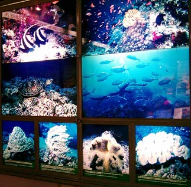
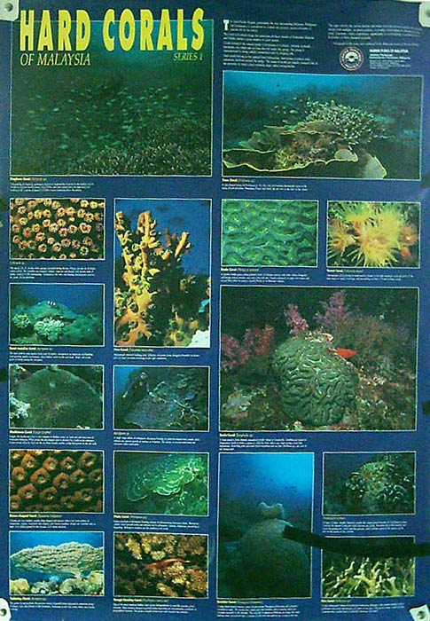

Malaysia Trav-E-Logs©
| Return to Perhentians sent 26 August |
 |
| back: Malaysia's East Coast | Backlit marine life poster |
================================= Today I returned to The Perhentian Islands after my first visit over 10 years ago. Thought it would be nice to snorkel amongst the world class corals again, and see how development changed these islands off the East Coast of Malaysia to one of the most popular backpacker destinations in S.E.Asia. In 1992, travel to the island was by fishing boat -- you found a fisherman in the town of Kuala Besut, and paid him to deliver you, making arrangements for your return pickup. On my first visit, stayed in a grass shack; breakfast and dinner were included in the price of accommodation, as there was no place to buy anything on the island. The bungalow did not need a door, as the population of the whole island was no more than 25 people. No bathroom; just a washing location and a well, complete with bucket on the end of a rope. At night we looked across to the fishing village on the other island. A new chalet had just been completed on one of the other beaches further down from where I stayed. The new place had a power generator, and even a pier, which was not considered to be very ecologically friendly. "The simple life was about to change" was the talk in camp. Several discussions took place about how to keep the islands pristine, and permit development at the same time. Already there was a ban on boats dropping anchor: boats would generally beach the bow on the sand at high tide, and passengers got wet feet getting onto the island. Several Chinese guests from K.L. staying at the new chalet invited me on a squidding trip with them. I also remember hiking to the other side of the island, and hearing a large animal in the tall grass on the other side, and seeing monkeys high above me while walking along the jungle path. That was then, and this is now. =================================
August 24 - 26, 2003
The bus from Cherating arrived in Jerteh after dark. But 20 minutes before arriving, my driver saw another bus as he passed a gas station, and laid on the air horn, bringing the bus to a halt on the side of the highway. Soon, the other driver pulled up in back of us, and both drivers had a lengthy, friendly discussion, resulting in me, the only passenger on either bus, being asked to change buses. In Jerteh, the local buses to Kuala Besut had already stopped running, so other arrangements will have to be made. A taxi driver comes running up to me and announces he will take me to Kuala Besut for only 15 Ringat -- just about double the normal rate. I decline. As I walk away, I see a van pulling away from the station with "Perhentian Islands" written on the side. As luck would have it, he's got to turn around before leaving the parking lot, and I'm able to flag him down. His English is not good, but tells me he leaves in 11 minutes after going to "other bus station." 5 Ringat. Sounds good, so I hop in. He drives a few minutes to a restaurant complex, and parks the van. I ask him how long, and he says 11 minutes. That's when I figured he means 11 PM. I tell him I'll walk, as I don't want to arrive in town after 11 PM and start looking for a place to stay. He says it's an hour walk, -- but tells me where the turn off is. I walk up to the corner and try to hitch a ride. Soon a van pulls up with four guys in it. They were sent by the earlier van -- and offer the ride for only 5 Ringat. Good thing I accepted the offer, because as we start down the road, the sign post says Kuala Besut - 17 KM. The old rule of thumb certainly didn't work this time. (Rule of thumb: Halve the time a Malaysian says it takes to walk a certain distance.)
In Kuala Besut I find the Yaodin Guesthouse is still in business, though double the price mentioned in the guidebook. Bargaining is unsuccessful. I'm the only guest. But this will work, as I plan to leave everything here, and go out to the Perhentians as a day trip. All I need is cash for the two boat trips and some food, fins, mask, towel, and lotion. I'll wear my suit, sun covers, and aqua socks. The guesthouse seems secure enough. In the morning, I sit and talk to the owner of one of the restaurants while waiting for the first flotilla to leave for the islands. This guy is into making money, and shows me the tee he whole sales. Long sleeve, colorful, and even in MY size. With what I've told him, we can't figure out where I stayed 10 years ago.
I take the first boat out in the morning, and was really surprised at how smooth the trip was, with a pair of 200 HP Mercury outboards pushing the fiberglass boat. As we approached the island, a smaller fiberglass "taxi" boat pulled alongside and we were told to transfer to the smaller boat for the last two-minute ride. We were told this is because the big boats do too much damage if they pull onto the beach. This boat takes us to "Long Beach " on Perhentian Kucil, the smaller of the two islands. Although the water appears clear, not much coral is seen. Where are the better snorkeling locations? Locals answer you have to sign up for a snorkeling trip. Backpackers say the other side of the island is better, it's only a 10 minutes walk across the waist. It seems every one of the 40 or so establishments on Long Beech have an electrical generator screaming for mercy, and walking across the island seems to take you right past most of them. I'm surprised at how short the distance really is. No monkeys, but I do run across a monitor lizard. Aur Beach, on the other side, is easier to take, with only 15 or 20 establishments (again, each running generators.) A gentleman in the second store I pass greets me "Good Morning". I stop in my tracks, and buy a drink. I strike up a conversation with Zak, tell him I'm just day tripping, and need a place to leave my little stuff while snorkeling. He says to feel free to leave it here. Time to spread that lotion on thick.
Coral is obvious both North and South of Aur beach. I spend a good part of the day snorkeling in the crystal clear water, happy I made the decision to return. The coral appears stressed from the climate changes of the past few years, but not from anchors, silt, nor dynamite as much of S.E.Asia. In five hours, I only see one small patch of bleached white coral. Most of the reefs are still alive, and if the quantity and size of fish present on the reefs is any indication of future health, the coral is on the road to recovery. In many places I saw the clown fish, darting in and out of the soft coral tentacles. Also, an amazing school of 14 lump-headed fish, the largest about 15 Kg. Many fish similar to a barracuda. Again and again I saw every color of the rainbow. One fish, two fish, red fish, blue fish. Well, okay, maybe not red fish. Just orange, pink, purple, blue, yellow, indigo, green, violet, brown, black, white, and all the combinations in between. Stripes, spots, patches, chains, and of course the false eyes. Sea cucumbers and clams. And the clarity of the water is just fantastic. And a few waves of jelly fish, though I never felt a sting. What did I not see? No sharks, eels, nor star fish. But now it's time to head back to Long Beach and prepare for my return trip.
To make the return trip, you have to use a "taxi" service to get you to the high-speed boats. At the taxi stand, a large drawing of the two islands is displayed, depicting the hundreds of establishments that now cram the shores. The more the drawing is studied, the more I'm convinced my first trip was on Besar. In a conversation with one of the boat captains that has lived here for the past 20 years, the story of the grass shacks, village visible on the other island, and the new chalet with generator is repeated. It appears coral beach was where the grass shacks were located, and the original chalet on Besar is called ABC. Before heading back to Kuala Besut, the high-speed boat makes a beeline for coral bay, and I get a chance to look at the beech from 50 meters off shore. It's a perfect fit. And the coral here seems even more inviting than where I had been all day. I'm happy that my little personal mystery has been solved.
No, not a single underwater camera was seen for sale before going to the Perhentians. But just to add some color to this story, here is a picture of a poster, showing the type of coral I feasted my eyes on for about 4 hours.
Back in Kuala Besut, the owner of the restaurant is not in. Up in the guesthouse, over an hour is spent in the shower washing the salt water and sand out of everything and everywhere. Up goes the backpacker clothesline, with the ceiling fan on full to help with drying. My aqua socks and long-sleeve shirt will be the hardest to dry for tomorrow morning. Then down to the beach for dinner -- Tom Yam soup, rice, and orange juice. I forget to tell them NO SUGAR, so have to suffer through the sweetness. After a full night's rest, everything is packed up, and surprisingly all has dried on the clothesline. Now the owner of the restaurant is in, and he is not surprised to hear the location from 10 years ago was Besar, not Kuchil. Now I'm ready for the first bus back to Jerteh, then north to Kota Bharu.
Enjoy!
Bill
------------------------------
Email me at the juno.com address "dancer2SEAsia"
"Travel is Fatal to Bigotry, Prejudice, and Narrow-minded ness" .... attributed to Mark Twain
| next: Return2Bangkok |
| back: Malaysia's East Coast |